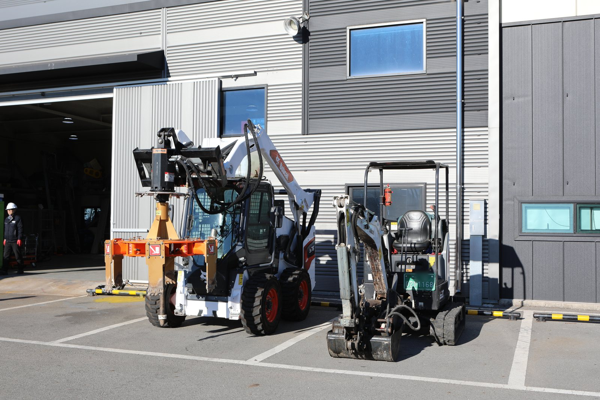

BUSINESS 04 · SEWER CLEANING · DREDGING
준설·슬러지 회수
하수·오수관과 처리시설의 퇴적물 준설 및 슬러지 회수 작업.
OVERVIEW
퇴적물의 특성과 현장 구조, 회수 범위를 함께 살펴봅니다.
하수도 퇴적물과 폐수처리장 슬러지 등 대상 물질과 현장 구조를 확인합니다. 회수 작업과 필요한 후속 관리의 범위를 함께 검토합니다.
대상 설비·업무
- 하수도 퇴적물
- 하수처리시설
- 오수관
- 폐수처리장 슬러지

FIELD
현장의 모습
맨홀 주변에서 호스를 다루는 작업 장면입니다.
데칸타 (Screw Decanter)
원심분리를 이용한 고액분리
- 1원액 투입
- 2세정수 투입
- 3원심분리
- 4Cake 배출
- 5분리액 배출
필터프레스 (Filter-Press)
여과·압착을 이용한 탈수
- 1원액 투입
- 2여과판 압착
- 3여과액 배출
- 4Cake 탈거
- 5여과판 세척
절차는 기술소개서(2025)의 작업 절차를 그대로 옮겼습니다. 처리량·함수율 등 사양은 대상 물질의 응집 상태에 따라 달라지므로 상담 시 안내합니다.
AFTER RECOVERY
회수 이후의 과정
클리닝과 준설 이후에는 회수물의 특성에 맞는 후속 관리가 필요합니다. 원심분리 방식의 데칸타와 압착·여과 방식의 필터프레스 등 고액분리·탈수 과정을 살펴보고, 현장 조건에 맞는 적용과 처리 연계 범위를 상담할 수 있습니다.
- 01회수물 특성
클리닝과 준설로 회수한 물질의 특성을 먼저 확인합니다.
- 02탈수·고액분리 검토
회수물에 맞는 고액분리·탈수 방식을 살펴봅니다.
- 03처리 연계 범위
현장 조건에 맞는 적용과 처리 연계 범위를 상담합니다.
EQUIPMENT & FIELD
장비와 현장
맨홀 작업 장면과 준설용 장비의 외형입니다. 회사소개서의 장비 목록에는 무인준설로봇(파쇄형·흡입형), 무인로더, 스키드 로더, 소형 굴삭기 등 준설용 장비가 올라 있습니다.



준설·슬러지 회수,
어디까지 가능한지 물어보세요.
시설 종류 · 대상 물질 · 현장 상태 · 희망 작업 시기 등을 알려 주시면 검토에 필요한 정보를 함께 확인하겠습니다.